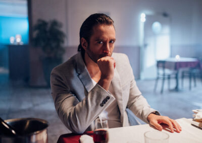
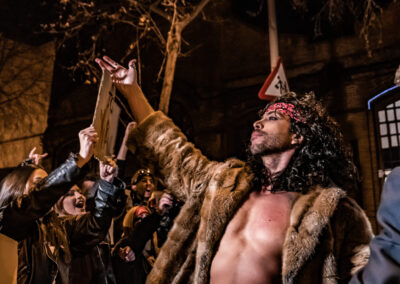
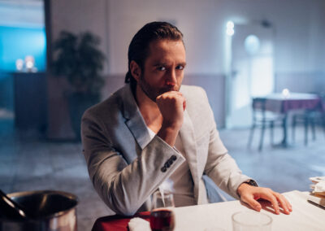
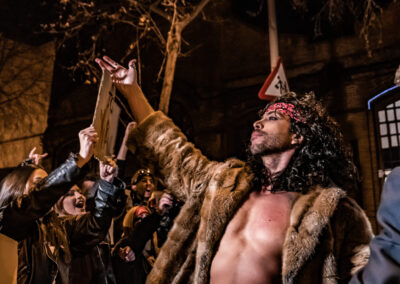
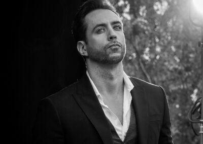
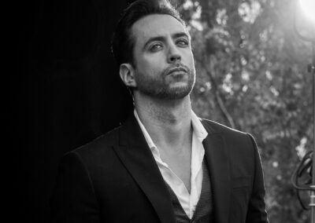

Anatomía del mal
Anatomía del mal
Jordi Wild es un youtuber, podcaster y actor español. Conocido por ser uno de los creadores de contenido más originales, completos y con más seguidores del panorama actual, su canal El Rincón de Giorgio suma millones de suscriptores, y su podcast, The Wild Project, se ha convertido en el más escuchado del mundo en español, además de haber ganado varios premios en los últimos años. En 2022 publicó su libro ASÍ ES LA PUTA VIDA, que se ha convertido en un best seller y que muestra la realidad del día a día sin edulcorantes ni eufenismos.
A continuación se mostrará el trabajo a lo largo del tiempo y toda la creación de sus proyectos.
 




 
